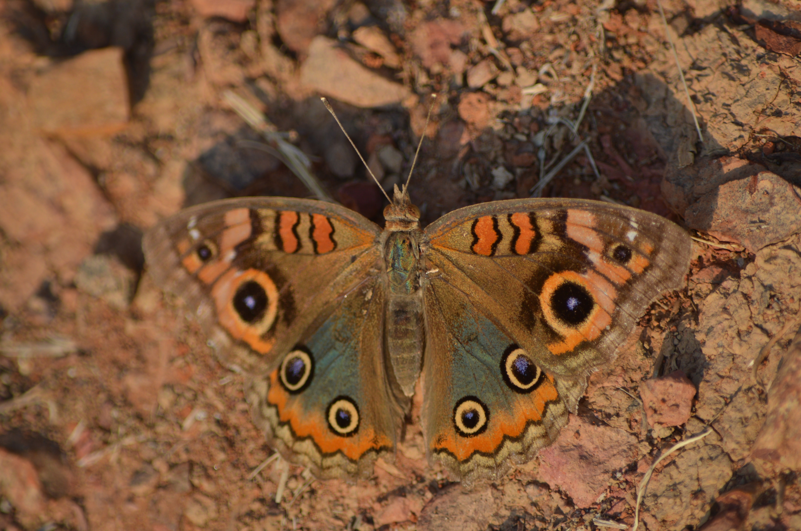
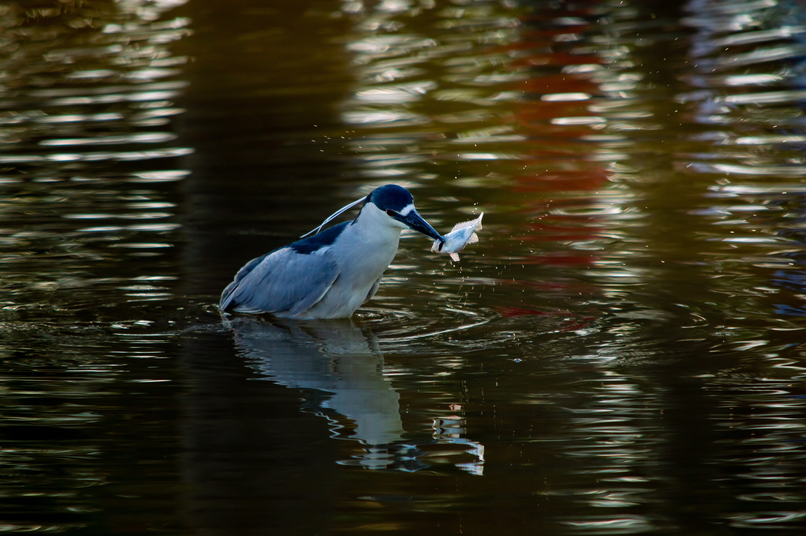

Formado em Gestão de TI pela Faculdade SENAC - DF em 2010, porém não pude deixar o trabalho da época para
iniciar na áre de TI.
Depois de um logo tempo no mercado financeiro, tento agora, por meio da Alura, rever, aprender e me capacitar pra enfrentar
as dificuldades de alguém que não tem a experiência exigida pra iniciar na carreira de TI.
Sou um amante da fotografia, penso que toda situação tem seu momento mágico e parar um pouco pra aprecisar a natureza e
capturar esse momento num click é maravilhoso.
Só tenho boas coisas pra falar da Alura, sempre inovando e trazendo as melhores aulas pra comunidade. Fico feliz
por ter participado da Imersão CSS da Alura. ;)
Fotografia
Ponte JK - um dos mais lindos cartões-postais de Brasília - DF.
Cachoeira Indaiá - Formosa-GO
Fotografia no escuro à luz de velas.
Meu filhote, Lion. Parece ser muito fofo, mas é uma ferinha que gosta muito de morder.
Nascer dos sol - esse é um dos melhor momentos pra fotografar.

Uma linda borboleta.
Nosso satélite natural, a Lua. Do tempo em que eu tinha telescópio.

Presa e Predador.
Pôr dos sol na Praça dos Cristais - esse é o outro melhor momento pra fotografar.